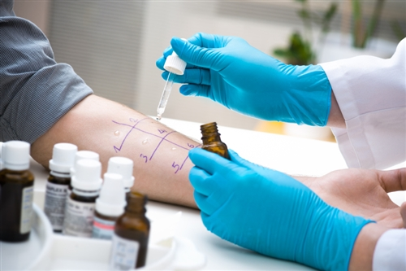
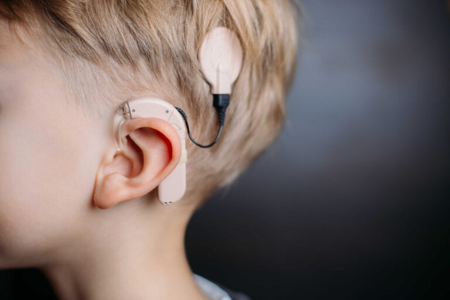
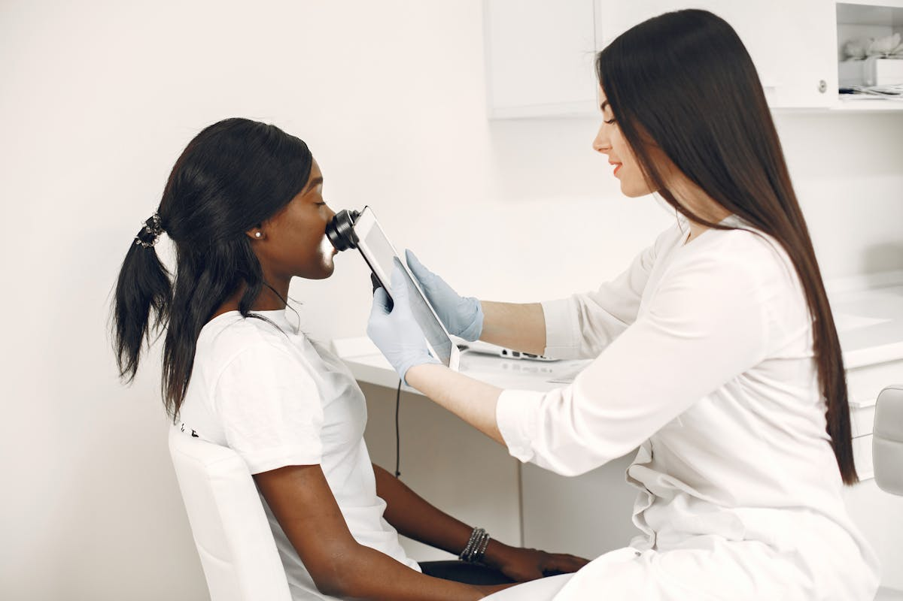
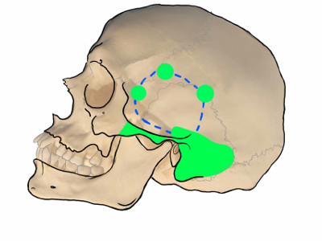
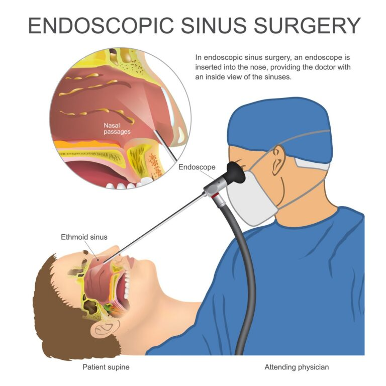
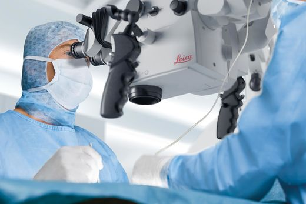
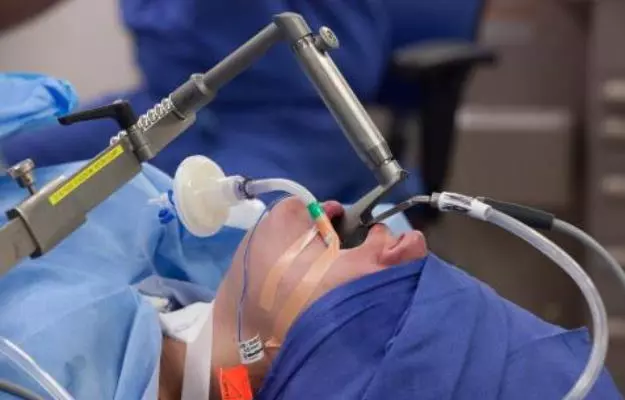
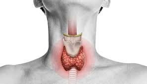
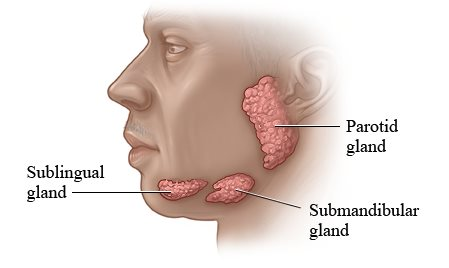

ENT Outpatient
Dedicated ENT consultations for acute symptoms, chronic concerns, follow-up reviews, and treatment planning.
Calling time is 10 AM to 10 PM. Book appointments quickly through phone or WhatsApp.
Book Appointment on WhatsApp Online ConsultationCHESS directly provides ENT outpatient care, vertigo support, voice therapy, allergy clinic and immunotherapy, headache review, facial aesthetics, and hearing aid support.
Dedicated ENT consultations for acute symptoms, chronic concerns, follow-up reviews, and treatment planning.

Assessment and treatment for dizziness, balance disorders, and recovery plans that may include posture and exercise guidance.
Read moreSupport for voice recovery, rehabilitation, and allied therapy planning alongside ENT review where needed.

ENT-linked allergy support for patients dealing with recurrent irritation, sinus burden, or upper airway triggers.

Hearing support pathways that connect patients with evaluation, guidance, and follow-up inside the clinic ecosystem.

CHESS also includes headache-focused review and facial aesthetics within its outpatient service mix.
CHESS offers a wide surgical range, from skull base procedures to sinus work, ear surgery, thyroid surgery, laryngeal surgery, and salivary gland procedures.

Includes endoscopic skull base surgery, endoscopic CSF leak procedures, and related complex ENT surgical care.
Read more
Focused on reshaping and reconstructing the nose to address deformity, post-traumatic changes, structural irregularity, and breathing-related concerns with functional and aesthetic planning.
Read more
Ear surgery offerings include microscopic procedures, endoscopic ear surgery, and stapedectomy.

Microlaryngeal surgery and phonosurgery support patients whose voice-related issues need procedural intervention.

Includes thyroidectomy, parotidectomy, and submandibular salivary gland excision within the CHESS surgical service range.

Also listed: surgery for sleep apnea and maxillo mandibular surgery within the CHESS surgical service range.
Support items such as pharmacy and lab services are an important part of patient convenience and continuity of care.
Medication access and prescription coordination are part of the overall patient experience at CHESS.
Diagnostic support services help patients move from consultation to investigation with less friction.
This principle remains central to CHESS. Patients are treated not just as cases, but as partners in achieving better health outcomes.